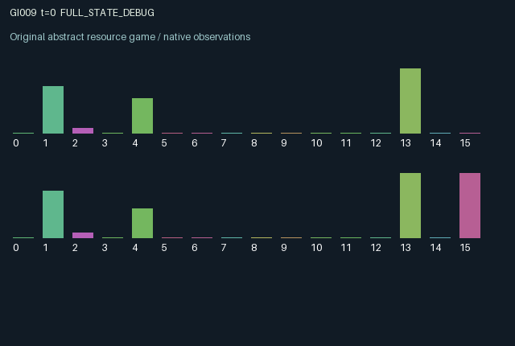

GI009 / LEGACY_ARRAY
astra-d2-00009: a hysteretic resource commons with delayed restoration
2 agents5 actions16 observation columns32 original horizonRuntime: PASS
Release verification episode
Untrained uniform legal actions. Actual JAX state sampled along the full original episode; full-state debug camera. No human performance or learning claim.

Run this game
crucibles play --game 9
Start Python locally, then open the address printed by the terminal. Installation, multiplayer, takeover and keyboard controls →
Objective, rewards & ending
Exact task contract
{
"objective": "Accumulate original per-agent rewards under the interaction rules in mechanism.md.",
"natural_termination": "No early terminal; original t >= 32 horizon.",
"exact_transition_and_reward_source": "def raw_step(self, key, state, actions):\n public_request = 0.18 * (actions == 1).astype(jnp.float32)\n allocation = jnp.minimum(\n 1.0,\n state[\"water\"] / jnp.maximum(jnp.sum(public_request), 0.18),\n )\n taken = public_request * allocation\n private_take = jnp.minimum(\n state[\"reserve\"],\n 0.18 * (actions == 2).astype(jnp.float32),\n )\n planted = ((actions == 3) & (state[\"reserve\"] >= 0.14)).astype(jnp.float32)\n cleaned = (actions == 4).astype(jnp.float32)\n matured = state[\"nursery\"][:, 0]\n nursery = jnp.stack((state[\"nursery\"][:, 1], planted), axis=1)\n toxin = jnp.clip(\n state[\"toxin\"] + 0.1 * jnp.sum(taken) / 0.18\n - 0.08 * jnp.sum(cleaned) - 0.02 - 0.05 * jnp.sum(matured),\n 0.0,\n 1.0,\n )\n regeneration = jnp.where(state[\"collapsed\"], 0.006, 0.05)\n water = jnp.clip(\n state[\"water\"] - jnp.sum(taken)\n + regeneration * (1.0 - state[\"water\"])\n + 0.09 * jnp.sum(matured),\n 0.0,\n 1.0,\n )\n recovery_gate = (water > 0.55) & (toxin < 0.22)\n collapse_gate = (water < 0.16) | (toxin > 0.72)\n collapsed = jnp.where(state[\"collapsed\"], ~recovery_gate, collapse_gate)\n reserve = jnp.clip(\n state[\"reserve\"] - private_take - 0.14 * planted\n + 0.025 * water * (1.0 - toxin),\n 0.0,\n 1.0,\n )\n public_quality = 1.0 - 0.65 * state[\"collapsed\"].astype(jnp.float32)\n rewards = (\n 0.7 * public_quality * taken / 0.18\n + 0.45 * private_take / 0.18\n - 0.02 * planted - 0.04 * cleaned\n ).astype(jnp.float32)\n next_state = {\n \"t\": state[\"t\"] + jnp.array(1, dtype=jnp.int32),\n \"water\": water.astype(jnp.float32),\n \"toxin\": toxin.astype(jnp.float32),\n \"collapsed\": collapsed.astype(jnp.bool_),\n \"reserve\": reserve.astype(jnp.float32),\n \"nursery\": nursery.astype(jnp.float32),\n \"last_take\": taken.astype(jnp.float32),\n \"last_private\": private_take.astype(jnp.float32),\n \"last_clean\": cleaned,\n \"last_mature\": matured,\n }\n done_all = next_state[\"t\"] >= 32\n dones = jnp.full((2,), done_all, dtype=jnp.bool_)\n info = {\"done_all\": done_all, \"legal_mask\": self.legal_actions(next_state)}\n return self.observe(next_state), next_state, rewards, dones, info"
}Declared per-step reward bounds: -1.0 to 1.0. Observability: source_defined.
Rules
Original mechanism document (historical status wording retained)
# astra-d2-00009: a hysteretic resource commons with delayed restoration This is an original, parentless source proposal. It has not been executed or validated by the author. Its relation to common-pool resource management, ecological hysteresis, and delayed public-good investment is intentional and generic. No nonisomorphism, eligibility, compiler result, or learning gain is claimed. ## Persistent causal structure Both agents can extract from shared water, take from their separate reserves, invest reserve into delayed restoration, or clean shared toxin. Water and toxin jointly determine a persistent productive/collapsed regime. Productive stock collapses below water 0.16 or above toxin 0.72. A collapsed system recovers only above water 0.55 and below toxin 0.22. Consequently, crossing back over the collapse boundary does not itself restore productivity. Actions are 0 wait, 1 extract public water, 2 take private reserve, 3 plant restoration, and 4 clean. Public requests are 0.18 each and are proportionally reduced when shared water cannot meet them. Private extraction is capped by own reserve. Planting requires 0.14 reserve and consumes that amount. A new planting enters a two-position nursery and matures on the second subsequent call after insertion. Mature plantings increase shared water and remove shared toxin, regardless of which agent paid. Public extraction raises toxin. Cleaning removes toxin immediately. Baseline toxin decay and water regeneration also operate, but collapsed water regenerates more slowly. Own reserves recover according to the new shared water and toxin, so both agents' shared-resource actions change each other's later private opportunities. The existing regime determines current extraction quality and current baseline regeneration; the updated regime governs the following step. ## Information and incentives Water, toxin, regime, extraction amounts, cleanup, and aggregate restoration information are public. Each agent observes its own reserve and complete nursery but not the other's reserve or full nursery. The observation supplies the two distinct regime predicates so the hysteresis is explicit rather than hidden in an undocumented threshold. Reward is 0.7 times the fraction of a full public extraction, scaled to 35 percent in the collapsed regime; or 0.45 times the fraction of a full private extraction. Successful planting costs 0.02 reward and cleaning costs 0.04. Actions are exclusive, giving rewards in [-0.04, 0.7]. All actions remain legal: unfunded planting has no planting effect or planting cost. The public benefit of restoration arrives after its private resource cost, creating a free-riding possibility without imposing an intended winner. ## Observation columns 0 elapsed time / 32; 1 shared water; 2 shared toxin; 3 collapsed indicator; 4 own reserve; 5-6 own nursery positions; 7 total newest nursery occupancy / 2; 8 own last public extraction / 0.18; 9 other last public extraction / 0.18; 10 own last private extraction / 0.18; 11 other last cleanup indicator; 12 total last maturation / 2; 13 current recovery predicate; 14 current collapse predicate; 15 agent index. ## Scope and possible failure modes This is a deliberately small resource-management mechanism, not an ecological model. Simple hoarding, extraction, or restoration schedules may dominate; collapse may be avoidable or recovery may be unattractive within 32 steps. Those are possible empirical outcomes, not exclusions. All terminal state is retained, and trusted validation is still required.
Commands
0Wait
1Draw public water
2Consume private reserve
3Plant nursery
4Clean toxin
Roles & abilities
agent_0 Original legacy agent; see mechanism and source
agent_1 Original legacy agent; see mechanism and source
Observation permissions
Training receives only the original observation rows. Role cameras use declared visibility; debug cameras are explicitly marked. Local benchmark records log debug exposure and role takeover history.
Exact observation layout
[
{
"slice": [
0,
16
],
"visibility": "exact original observe() below",
"source_code": "def observe(self, state):\n recovery_gate = (state[\"water\"] > 0.55) & (state[\"toxin\"] < 0.22)\n collapse_gate = (state[\"water\"] < 0.16) | (state[\"toxin\"] > 0.72)\n obs = jnp.zeros((2, 16), dtype=jnp.float32)\n obs = obs.at[:, 0].set(state[\"t\"].astype(jnp.float32) / 32.0)\n obs = obs.at[:, 1].set(state[\"water\"])\n obs = obs.at[:, 2].set(state[\"toxin\"])\n obs = obs.at[:, 3].set(state[\"collapsed\"].astype(jnp.float32))\n obs = obs.at[:, 4].set(state[\"reserve\"])\n obs = obs.at[:, 5:7].set(state[\"nursery\"])\n obs = obs.at[:, 7].set(jnp.sum(state[\"nursery\"][:, 1]) / 2.0)\n obs = obs.at[:, 8].set(state[\"last_take\"] / 0.18)\n obs = obs.at[:, 9].set(jnp.roll(state[\"last_take\"], 1) / 0.18)\n obs = obs.at[:, 10].set(state[\"last_private\"] / 0.18)\n obs = obs.at[:, 11].set(jnp.roll(state[\"last_clean\"], 1))\n obs = obs.at[:, 12].set(jnp.sum(state[\"last_mature\"]) / 2.0)\n obs = obs.at[:, 13].set(recovery_gate.astype(jnp.float32))\n obs = obs.at[:, 14].set(collapse_gate.astype(jnp.float32))\n obs = obs.at[:, 15].set(jnp.arange(2, dtype=jnp.float32))\n return obs"
}
]Entity visibility & attributes
[]
Actual verification & provenance
Per-game execution receipt
{
"game": "gi009",
"status": "PASS",
"verification_revision": 2,
"source_sha256": "776c5f8d7aca7a174b4df46a22d5c25a0a0971f53eb0d99db82efd20eee44fa6",
"seed": 20261101,
"runtime": {
"jax": "0.4.38",
"numpy": "1.26.4",
"devices": [
"TFRT_CPU_0"
]
},
"dimensions": {
"num_agents": 2,
"observation_size": 16,
"num_actions": 5,
"max_steps": 32
},
"checks": {
"eager_reset": {
"status": "PASS",
"seconds": 0.904327392578125
},
"observation_spaces_legal_masks": {
"status": "PASS",
"seconds": 0.12696099281311035
},
"eager_step": {
"status": "PASS",
"seconds": 0.8360607624053955
},
"jit_reset": {
"status": "PASS",
"seconds": 0.40666675567626953
},
"jit_step": {
"status": "PASS",
"seconds": 0.2296006679534912
},
"eager_jit_integer_parity_float_measurement": {
"status": "PASS",
"seconds": 0.0011208057403564453
},
"jit_vmap_reset": {
"status": "PASS",
"seconds": 0.32085156440734863
},
"jit_vmap_step": {
"status": "PASS",
"seconds": 0.2859768867492676
},
"outer_autoreset_api": {
"status": "PASS",
"seconds": 0.8342626094818115
},
"full_original_horizon_episode_and_render": {
"status": "PASS",
"seconds": 1.2529494762420654
}
},
"human_scores": null,
"browser_controls": "PENDING",
"failures": [],
"elapsed_seconds": 5.805558681488037,
"float_parity_max_abs": 0.0,
"numerical_parity": "EXACT",
"raw_terminal_absorbing": "NOT_PART_OF_ORIGINAL_LEGACY_CONTRACT",
"terminal_outer_reset": "PASS",
"episode_steps": 32,
"scripted_random_returns": [
3.630807638168335,
4.329363996163011
],
"terminal": true,
"demo_information": "FULL_STATE_DEBUG",
"demo_frames": 33,
"render_roles_checked": 2
}Chromium control verification
{
"game": "gi009",
"status": "PASS",
"human_scores": null,
"engineering": true,
"checks": [
"catalog_selected_and_real_native_reset",
"dom_queue_and_native_step",
"second_participant_ownership_and_native_joint_step",
"all_roles_individually_controllable_no_role_cap",
"explicit_debug_camera",
"release_to_pure_ai_without_reset"
],
"ui_sha256": "15b5861d23b3c42811865c954d5a988280bbfd21cf8e93754be2437a027158c5",
"seconds": 4.527400016784668
}Original identity and file hashes
{
"id": 9,
"key": "gi009",
"title": "astra-d2-00009: a hysteretic resource commons with delayed restoration",
"summary": "",
"tags": [],
"family": "legacy_array",
"dimensions": {
"num_agents": 2,
"observation_size": 16,
"num_actions": 5,
"max_steps": 32
},
"source_sha256": "776c5f8d7aca7a174b4df46a22d5c25a0a0971f53eb0d99db82efd20eee44fa6",
"manifest_sha256": "0636f121d49fd777cbf3bebb5fe03d4e60e49b12ee4a48651e9a1fd267346fd3",
"files": [
{
"file": "candidate.py",
"sha256": "776c5f8d7aca7a174b4df46a22d5c25a0a0971f53eb0d99db82efd20eee44fa6",
"bytes": 4852,
"origin": "work/exp_2/astra_generation/discovery_v2/initial/candidate_00009/attempt_00/candidate.py"
},
{
"file": "mechanism.md",
"sha256": "a7062c35058a708392cfdd22ca6ce0b8761c0740a3be81c9d2192b5b671231e1",
"bytes": 3560,
"origin": "work/exp_2/astra_generation/discovery_v2/initial/candidate_00009/attempt_00/mechanism.md"
}
],
"original_status": "LEGACY_SOURCE",
"original_saved_replay": false,
"release_validation": "PASS",
"human_scores": null,
"browser_validation": "PASS"
}